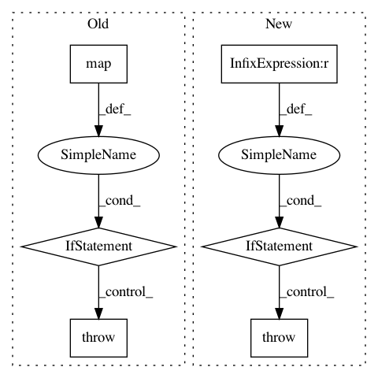

dc682236d6f167f733d65057c4faa07a20e32d04,bipy/core/distance.py,DistanceMatrix,from_file,#Any#Any#Any#,25
Before Change
if line_idx < num_sids:
if tokens[0] == sids[line_idx]:
row_data = map(float, tokens[1:])
if len(row_data) == num_sids:
data[line_idx, :] = row_data
else:
raise InvalidDistanceMatrixFormatError("The number of "
"values in row number %d doesn"t match the "
"number of sample IDs in the header." %
line_idx + 1)
else:
raise SampleIdMismatchError("Encountered mismatched "
"sample IDs while parsing the distance matrix "
"file. Please ensure the sample IDs match between "
After Change
for line_idx, line in enumerate(dm_f):
tokens = map(lambda e: e.strip(), line.strip().split(delimiter))
if line_idx == 0:
// We"re at the header (sample IDs).
sids = tokens
num_sids = len(sids)
data = np.empty((num_sids, num_sids))
elif line_idx <= num_sids:
if len(tokens) != num_sids + 1:
raise DistanceMatrixFormatError("The number of values in "
"row number %d is not equal to the number of "
"sample IDs in the header." % line_idx)
row_idx = line_idx - 1
if tokens[0] == sids[row_idx]:
row_data = np.zeros(num_sids)
for col_idx in range(row_idx):
row_data[col_idx] = float(tokens[col_idx + 1])
data[row_idx,:] = row_data
else:
raise SampleIDMismatchError("Encountered mismatched "
"sample IDs while parsing the distance matrix "
"file. Please ensure the sample IDs match between "
"the distance matrix header (first row) and the "
"row labels (first column).")
else:
if "".join(tokens):
// If it isn"t a blank line, raise an error because we
// shouldn"t ignore extra data.
raise InvalidDistanceMatrixFormatError("Encountered extra "
"rows without corresponding sample IDs in the "
"header.")
if sids is None:
raise MissingHeaderError("Could not find a header line containing "
"sample IDs in the distance matrix file. Is the file "
"empty?")
In pattern: SUPERPATTERN
Frequency: 4
Non-data size: 6
Instances
Project Name: biocore/scikit-bio
Commit Name: dc682236d6f167f733d65057c4faa07a20e32d04
Time: 2014-01-02
Author: jai.rideout@gmail.com
File Name: bipy/core/distance.py
Class Name: DistanceMatrix
Method Name: from_file
Project Name: probcomp/bayeslite
Commit Name: 047c1206650c6524075e6509809f9810f91548d4
Time: 2015-08-25
Author: riastradh+probcomp@csail.mit.edu
File Name: src/read_csv.py
Class Name:
Method Name: bayesdb_read_csv
Project Name: arnomoonens/yarll
Commit Name: de6ca4b8640d5be2acdfc326a8ce83917084ea5d
Time: 2017-03-25
Author: x-006@hotmail.com
File Name: knowledge_transfer.py
Class Name:
Method Name: main
Project Name: arnomoonens/yarll
Commit Name: de6ca4b8640d5be2acdfc326a8ce83917084ea5d
Time: 2017-03-25
Author: x-006@hotmail.com
File Name: async_knowledge_transfer.py
Class Name:
Method Name: main